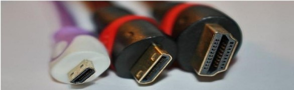

Computer hardware is the physical parts or components of a computer, such as the monitor, keyboard, computer data storage, graphic card, sound card and motherboard. By contrast, software is instructions that can be stored and ran by hardware. Hardware is directed by the software to execute any command or instruction. A combination of hardware and software forms a usable computing system. There are a number of different types of computer system in use today. The personal computer, also known as the PC, is one of the most common types of computer due to its versatility and relatively low price. Laptops are generally very similar, although they may use lower-power or reduced size components, thus lower performance. The computer case encloses most of the components of the system. It provides mechanical support and protection for internal elements such as the motherboard, disk drives, and power supplies, and controls and directs the flow of cooling air over internal components. The case is also part of the system to control electromagnetic interference radiated by the computer, and protects internal parts from electrostatic discharge. Large tower cases provide extra internal space for multiple disk drives or other peripherals and usually stand on the floor, while desktop cases provide less expansion room. All-in-one style designs from Apple, namely the iMac, and similar types, include a video display in the same case. Portable and laptop computers require cases that provide impact protection for the unit. A current development in laptop computers is a detachable keyboard, which allows the system to be configured as a touch-screen tablet. Hobbyists may decorate the cases with colored lights, paint, or other features, in an activity called case modding
The motherboard is the main component of a computer. It is a board with integrated circuitry (electric circuits collectively) that connects the other parts of the computer including the CPU, the RAM, the disk drives (CD, DVD, hard disk, or any others) as well as any peripherals connected via the ports or the expansion slots. But our primary emphasis is just what it does. Besides, motherboards do not all look alike. (Compare to image below.) It's a bit like lifting the hood on your car. You don't have to be a mechanic to know where to add windshield washer fluid. One of my goals is simply to take the mystery out of all that "stuff". It would be useful to open an old desktop PC just to actually see the parts. While I don't recommend this with a laptop or hand-held device, the concepts are pretty much the same. That goes for servers, mainframes and supercomputers, as well.
We will talk about a few things you might do yourself to upgrade your computer in the last section of this module. Simply looking inside your computer can tell you if you have an open bay to add another hard disk and if you can add memory (or have to replace it).
A motherboard is an electronic boarding a computer which interconnects hardware devices attached to it - which is to say, all of the system hardware. At a minimum it includes one or more Central Processing Units (CPU), and the main processing activity of the computer takes place on it. However, other connected printed circuit boards may contain their own pre-processing or post-processing CPUs, to take some of the load off of the motherboard; these, together with other plug-in boards without CPUs, may be called "Daughter boards". It was called a "mother" board in relation to these. A PC motherboard generally has a series of slots, allowing daughter boards to be plugged in directly. Other connectors on the motherboard allow communication through cables with various peripheral devices, both inside and outside the computer case.
Alternately referred to as a processor, central processor, or microprocessor, the CPU (Pronounced sea-pea-you) is the Central Processing Unit of the computer. A computer's CPU handles all instructions it receives from hardware and software running on the computer. Note: Many new computer users may improperly call their computer and sometimes their monitor the CPU. When referring to your computer or monitor, it is proper to refer to them as either the "computer" or "monitor" and not a CPU. The CPU is a chip inside the computer. The picture below is an example of what the top and bottom of an Intel Pentium processor may look. The processor is placed and secured into a compatible CPU socket found on the motherboard. Processors produce heat, so they are covered with a heat sink to keep them cool and running smoothly.
Data is stored by a computer using a variety of media. drives are found in virtually all older computers, due to their high capacity and low cost, but drives are faster and more power efficient, although currently more expensive than hard drives in terms of dollar per gigabyte, so are often found in personal computers built post-2007. Some systems may use a controller for greater performance or reliability.
To transfer data between computers, a drive or disc may be used. Their usefulness depends on being readable by other systems; the majority of machines have an optical disk drive, and virtually all have at least one USBport.
A chipset is a group of interdependent motherboard chips or integrated circuits that control the flow of data and instructions between the central processing units (CPU) or microprocessor and external devices. A chipset controls external buses, memory cache and some peripherals. A CPU is unable to function without impeccable chipset timing. A chipset includes the circuit board layout/functionality and circuit mechanisms. Varieties include microprocessors and modem card chipsets. In addition, a CPU has several different chipsets that vary according to architecture. A chipset is specifically designed for a motherboard. The chipset and motherboard must be compatible with the CPU to prevent system fail over. Most chipset drivers are manually updated and installed. A chipset has two sections – Southbridge and Northbridge – with specific sets of functions that communicate between the CPU and external devices. The Southbridge, which is not directly connected to the CPU, is also known as the input/output controller hub. Southbridge handles the motherboard's slower connections, including input/output (I/O) devices and computer peripherals like expansion slots and hard disk drives. The Northbridge connects the Southbridge to the CPU and is commonly known as the memory controller hub. The Northbridge handles a computer's faster interaction requirements and controls communication between the CPU, RAM, ROM, the basic input/output system (BIOS); the accelerated graphics port (AGP) and the Southbridge chip. The Northbridge links I/O signals directly to the CPU. The CPU uses the Northbridge frequency as a baseline for determining its operating frequency. A chipset and device drivers are compatible when an operating system is initially installed. However, device drivers eventually become outdated due to subsequent hardware and software installations. Outdated or incompatible device drivers create compatibility issues, lack of features and sub-par device performance.
Input and output devices are typically housed externally to the main computer chassis. The following are either standard or very common to many computer systems.
Devices allow the user to enter information into the system, or control its operation. Most personal computers have a mouse and keyboard, but laptop systems typically use a touchpad instead of a mouse. Other input devices include webcams, microphones, joysticks and image scanners.
Devices display information in a human readable form. Such devices could include printers, speakers, monitors or a Braille embosser.
Ports are used by a motherboard to interface with electronics both inside and outside of the computer. Integrated ports are those that are part of, or directly wired to, the motherboard. Internal integrated ports are used to connect devices inside the system unit. External ports may be connected to the motherboard directly (integrated) or by circuit boards that are inserted into slots on the motherboard. It is often possible to add new external ports by inserting such a circuit board into an open slot. The external integrated ports are generally grouped together as shown below. Expansion card ports are arranged in a row of equal sized rectangular slots (see video and cards below). Wired Ethernet connection (Looks like a (bigger) telephone/modem jack. The cable itself is referred to by its category (e.g. CAT 5) and basic type, UTP (Unshielded Twisted Pair).
USB or Universal Serial Bus is a connectivity specification, currently at version 3 (V3). They are very common today, connecting flash drives and many peripherals. Modern desktop systems have should have 4-8 on the back of the computer and at least two on the front. USB is one of the most successful interconnect in computing history. V1 operates at 1.5 Mbps (low speed) or 12 Mbps (full speed), V2 (high speed) at 480 Mbps, and V3 (super speed) at up to 5Gbps. It can be found in over 2 billion PC and mobile devices. USB has strong consumer brand recognition and a reputation for ease-of-use. USB connectors are sometimes used to supply power, generally to recharge hand-held devices like a Smartphone. Different USB connectors. From left to right: male Micro USB B-Type, proprietary (not USB), male Mini USB (5-pin) B-type, female A-type, male A-type, male B-type. Shown with a centimeter ruler. Female A-type connector (4th from left) is "upside down" to show the pins.
The High-Definition Multimedia Interface (HDMI) replaces older analog media interfaces. It is available in "mini" and "micro" on many portable devices, allowing those smaller screen devices to be displayed on a larger screen, such as a TV. 
For many years the telephone, or voice band, modem (not shown above) was the primary means of connecting desktop and laptop PCs to the Internet. Modems have not gone away, as broadband connections are not available in all areas, but they are disappearing. A standard telephone modem uses your existing analog telephone line at speeds up 56 Kbps. The speed is limited by the quality of the phone line connection - extraneous noise lowers the actual through put.
Broadband connections (to be discussed in the section on networks) also use modems of a different type. They are still called modems because their essential function is the same - they convert digital signals to analog and modulate them on an analog medium when sending information, and reverse this process when receiving it. Hence, they MOdulate and DEModulate. Modem ports and connectors look a lot like Ethernet (RJ-45). A lot of networking was initially done with phone cables. Technically, they are called Category 3 UTP.
On the typical desktop PC, a number of slots are provided on the motherboard (see image above) for attaching devices. One use of these slots is to expand or add to the ports available for external devices, as noted above. Graphics, audio and networking may be incorporated on the motherboard, but are often handled by (daughter) circuit boards added into slots. These are often pre-installed on your computer, but may be replaced (upgraded) as needed. Adding devices to laptop computers, after purchase, is problematic. Simply opening and closing the case can be a challenge and is not recommended for the novice, although manufactures usually provide fairly easy access to the RAM memory and hard disk. To allow for expansion through external devices, laptops often have an external slot (or port).
Graphics cards are also called video cards or a video adapter. They are in all PCs, but may be integrated on the motherboard. Graphic cards generate output images that can be displayed on the monitor. While many graphics cards are built into the motherboard these days, enthusiasts will invest in stand-alone graphics cards with more powerful processing capabilities. This allows for heavy image editing, or better rendering and frame rates in computer games. Graphics cards are designed to offload rendering from the CPU. Graphics cards are powered by the motherboard and require a PCI-X or PCIe slot to install. Some cards require more power and thus will need a 6-8 pin connector that runs directly to the power supply. Graphics cards also include on-board memory for efficient rendering. Typical sizes include 128-1024MB of memory. Today, high end graphics cards have multiple core processors that are largely parallel to increase texture fill and process more 3D objects in real time.
A sound card, also referred to as an audio card, facilitates the input and output of audio signals to and from a computer under the control of computer programs. Sound cards for computers were uncommon until 1988, which left the single internal PC speaker as the only way early PC software could produce sound and music. Uses of a sound card include the audio components for multimedia applications such as games, video/audio editing software and music composition. Most computers today have sound capabilities built into the motherboard, while others require additional expansion cards. The external ports are coded by industry standard.
A Network Interface Card (NIC) also called a network card, network adapter, or LAN Adapter is a piece of computer hardware designed to allow computers to communicate over a computer network. Used for remote communication via cable. Data is transmitted over a cable network. The NIC connects computers to the Internet and other devices, such as printers. Many modern motherboards have NICs built in by default. Most laptops also provide a wireless adapter or wireless network interface controller (WNIC). This device allows your laptop to communicate via a radio transceiver with a wireless (Wi-Fi) network. A WNIC can be added using a USB port or Express Card slot, often available on laptops.
Memory refers to the devices that are used to store data on an electronic computer. There are two basic types of memory: volatile (or temporary), and non-volatile (or permanent).
RAM stands for Random Access Memory; it is the primary storage for the computer. All programs, including the operating system and any data they are using must be in RAM for the computer to access them. Whenever I hear the term, I think, "DAM, why'd they call it RAM?" It is called random because the computer can directly access any location in RAM (using its memory "address"), though we rarely have call to access memory randomly. Thus, Direct Access Memory would have been a better name. By comparison, a tape (video or audio) is a sequential medium. Accessing a particular note in a song is virtually impossible and requires scanning forward to find it. An audio editing program working on a song in RAM can and does directly access any point you want in the song. (Specifying it might be a problem, but consider cutting a section out to use as a ring tone. Once you specify the end points, the program goes directly to the indicated beginning and end.) RAM is volatile, or temporary, storage. When the computer is booted, the operating system is loaded into RAM. Any applications you use are located in RAM, along with the data the application may use. A loss of power means that everything in RAM is lost. Data that you did not save (any changes you have made recently) are lost. To help protect you from this loss many applications automatically save a working copy to the (permanent) storage on the hard disk at regular intervals. (You can then recover most of your work.) The amount of RAM a system has is among the key specifications you will look at when considering to buy (or upgrade) a computer system. Without sufficient RAM, the computer will work poorly, or not all.
RAM is typically measured in gigabytes (GB), and the more you have (within reason), the better your system is likely to work (and the more it will cost).
Most computers use dynamic RAM (as opposed to the more expensive, but faster static RAM) for main memory in the computer. Currently, computers tend to use DDR-1,DDR-2 or DDR-3RAM chips. All are a type of synchronous dynamic RAM (SDRAM) with each generation becoming progressively faster. Obviously, for the best performance, you want DDR-3. All forms of RAM are fast compared to disk drives and other mass storage devices, outperforming them by a factor of 1,000 times or more. (Solid State Drives are a special case discussed below.) RAM chips are manufactured as circuit boards (dual in-line memory modules) that are slotted into the motherboard.
Cache Memory is very similar to RAM. It is faster, but more expensive, than RAM, so it is generally available in much smaller size than main memory. You will recall that level 1 cache is located in the CPU. Other levels are generally larger than their predecessor and located near the CPU. Cache memory is volatile, or temporary, storage - the intention is for it to be very temporary storage.
Both the operating system and all of your applications (along with their data) need to be in RAM for you to use them. What happens when RAM fills up? Or, a related problem, there isn't a big enough chunk of RAM available to fit an entire application into? Memory solves these problems using a special (swap or page) file on the hard disk. Pieces (called a page) of an application that is not currently being used can be moved temporarily to the swap file, making more room available in physical RAM. When that part of the program is needed, it is taken from the file and placed back into RAM, possibly displacing some other page from RAM. The two pages are said to have been "swapped".
This scheme allows the computer to pretend that it has much more RAM than it actually does, at a significant performance cost. RAM is about 1,000 times faster than the hard disk, so the process of swapping pages slows the system down. In the worst case, called thrashing, the computer is spending an inordinate amount of its time simply moving pages back and forth from RAM to the swap file. The only practical remedy for this situation is to add additional physical RAM - or quit using so many apps at the same time.
ROM refers to a Read Only Memory chip that cannot be written on or erased by the computer user without taking special action. ROM is non-volatile, so contents are not lost when power to the computer is no longer available. Initially, ROM was truly read only (hence the name). Any program it stored was "hard wired" at the time of manufacture. This evolved into erasable programmable ROM (EPROM) chips, as shown at right. These devices allowed (at least some amount of) the programming to be erased and changed or "flashed". Eventually, this technology evolved into the portable flash drives that are so ubiquitous today and the new solid state drives.
The ROM chip contains all of the information needed to start the computer. The BIOS (or Basic Input/output System) checks to make sure all the necessary hardware is attached and working. It then begins loading the operating system found on the hard disk, in a special location, into RAM. This is often done in two steps, with the initial phase called the bootstrap. Once the operating system is fully loaded into RAM, control is turned over to the OS to complete the boot process. The final steps in booting include starting necessary system utilities, programs you have scheduled to be loaded at boot time, and configuring the applications to run on your system. This boot process, which starts at the flip of a switch, has a mechanical analogy in the (many different) Rube Goldberg machine(s). This step from hardware, i.e. a big paperweight, to an operating computer is the real "magic" of computing.
We are concerned here with storing large amounts of data (and programs) permanently, hence another name for these devices is long term storage devices. In relation to RAM, or primary memory, they are also sometimes called secondary memory. Many of the devices discussed here can also be attached externally, which is an important option for laptops (and backups).
Magnetic media for computers are digital. They save bits of data by altering the polarity of a section on the surface of the medium. This change lasts indefinitely (like magnetizing a pin), so it is considered permanent. Magnetic media includes hard disk drives, tapes, and a number of legacy devices. They also work similarly to the magnetic strip on the back of a credit or ATM card.
A hard disk drive (HDD) is a non-volatile, random access device for digital data. It features rotating rigid platters on a motor-driven spindle within a protective enclosure. Data is magnetically read from, and written to, the platter by read/write heads that float on a film of air above the platters. Introduced by IBM in 1956, hard disk drives have fallen in cost and physical size over the years while dramatically increasing in capacity. Hard disk drives have been the dominant device for secondary storage of data in general purpose computers since the early 1960s. They have maintained this position because advances in their real recording density have kept pace with the requirements for secondary storage. Today's HDDs operate on high-speed serial interfaces; i.e., serial ATA (SATA) or serial attached SCSI (SAS). A hard-disk drive is normally located inside the computer case. Additional drives may be added either inside the case or attached externally via a port, usually USB.
Hard disks come in various speeds. The key specifications to be considered are average access time and data transfer rate. The access time includes both the seek time (time to move the arm & head to the correct location) and latency (time for the desired location to rotate under the read/write head). For a particular size (0.85"-8") of disk platter, the faster the disk spins (3,000-15,000 RPM), the lower the access (latency) time will be and the faster the data transfer rate.
As shown in the image at right:
Jumpers allow the computer to close an electrical circuit, allowing the electricity to flow certain sections of the circuit board. Jumpers consist of a set of small pins that can be covered with a small plastic box (jumper block) as shown in the illustration to the right. Below the illustration, is a picture of what the jumpers may look like on your motherboard? In this example, the jumper is the white block covering two of the three gold pins.
Next to the pins is a silk screen description of each of the pin settings. In the picture jump pins 1-2 for Normal mode, 2-3 for config mode, and when open the computer is in recovery mode. Jumpers are used to configure the settings for computer peripherals such as the motherboard, hard drives, modems, sound cards, and other components. For example, if your motherboard supported intrusion detection, a jumper can be set to enable or disable this feature. In the past, before Plug-and-Play, jumpers were used to adjust device resources, such as changing what IRQ the device is using. Today, most users will not need to adjust any jumpers on their motherboard or expansion cards. Usually, you are most likely to encounter jumpers when installing a new drive, such as a hard drive. As can be seen in the picture below, ATA hard drives have jumpers with three sets of two pins. Moving a jumper between each two pins will change the drive from master drive, slave drive, or cable select.
Tip: Some documentation may refer to setting the jumpers to on, off, closed, or open. When a jumper is on or covering at least two pins it is a closed jumper, when a jumper is off, is covering only one pin, or the pins have no Jumper it is an open jumper. Caution: When changing the jumpers on any device, the device and your computer need to be turned off. Also, whenever working in a computer or with any electronic device is aware of ESD.
Every computer motherboard is different, which means there is no way to know how many jumpers are on a motherboard, unless you know the motherboard's manufacturer and model number. Once this information is known, this question can be answered by consulting the motherboard's documentation.